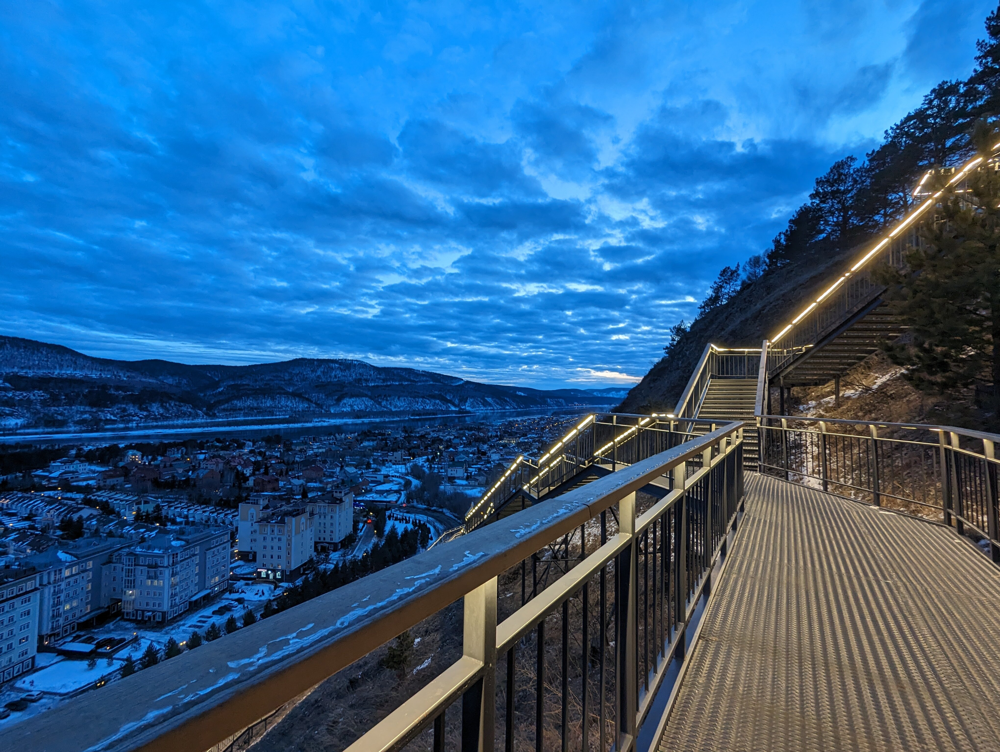
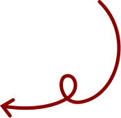
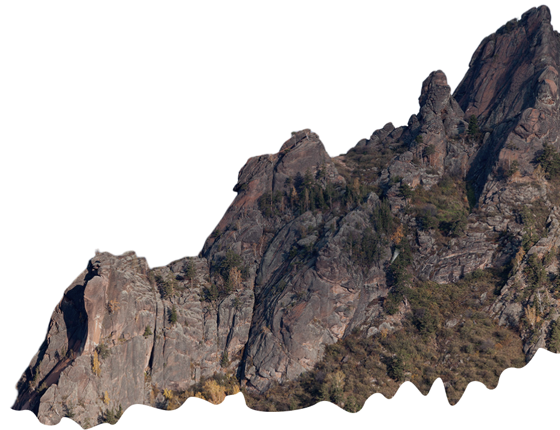
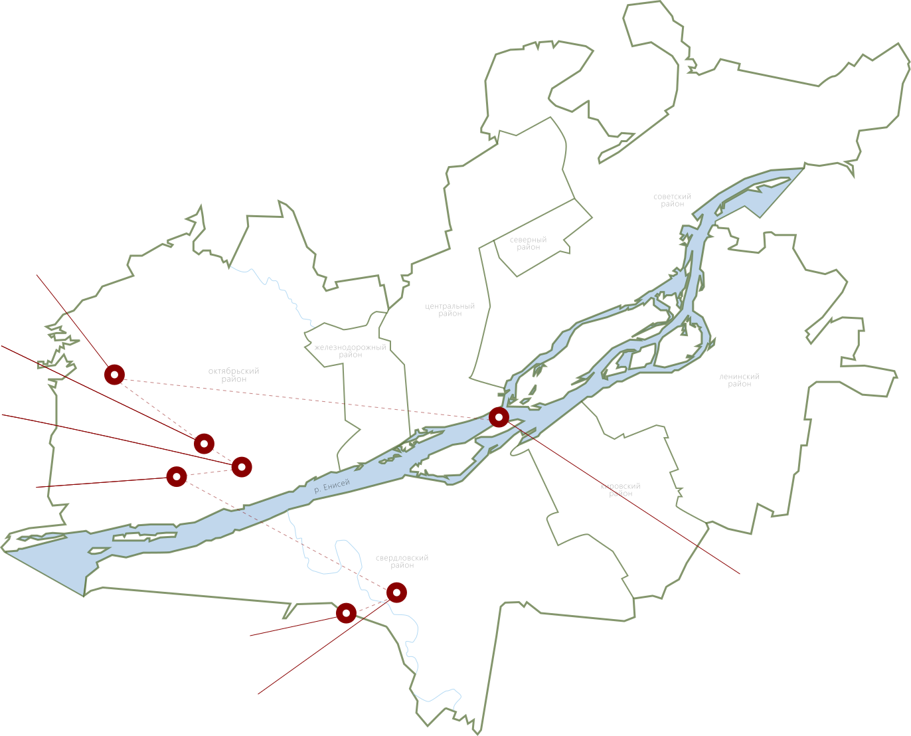

СЕРЕБРЯНЫЙ ЛОГ
Пространство, где дикая природа сочетается с удобной инфраструктурой для прогулок всей семьёй.

Природа, маршруты и места, которые стоит увидеть хотя бы
однажды.

Подобрать маршрут
Здесь не нужно уезжать далеко, чтобы оказаться на природе.
Горы, лес и Енисей - всё это рядом.

Посмотрите, где расположены природные объекты ТИЦ.

Пространство, где дикая природа сочетается с удобной инфраструктурой для прогулок всей семьёй.
ПодробнееОдин из крупнейших экопарков России с десятками маршрутов для прогулок, спорта и походов.
ПодробнееУютная долина в лесу рядом с Плодово‑Ягодной станцией - здесь легко забыть, что ты всё ещё в Красноярске.
ПодробнееЖивописный уголок в сердце Красноярска, раскинувшийся посреди могучего Енисея.
ПодробнееНациональный парк, где величественные скалы поднимаются прямо из сибирской тайги.
Подробнее